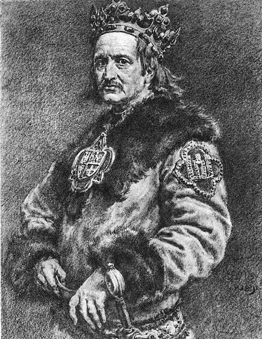
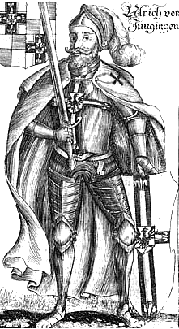

Leaders and Artefacts
Wladyslaw II Jagiello
Jogaila later known as Wladyslaw II Jagiello of the Jagiellon dynasty, born between 1352 and 1362 in Vilnius capital of modern day Lithuania, was the king of Poland from 1386 to 1434, his marriage to Jadwiga of Poland created the union of Poland and Lithuania a powerful force in europe the rule of Jagiello is considered the beginning of Polands Golden age.
Ulrich von Jungingen
Ulrich, was the 26th Grand Master of the Teutonic Knights he was born in 1360 in Hohenfels modern day Germany he served from 1407 to 1410 his reign being cut short after falling in battle. Later generations have imputed that he was hot blooded and arrogant and most likely under estimated his foes causing his defeat.
Vytautas the Great

Vytautas the Great, Jogaila's cousin was born around 1350 in Senieji Trakai a historic village 3km from modern day Trakai, Lithuania. He became the Grand Duke of Lithuania after seizing control from Jogaila's younger brother Skirgaila following a civil war in 1389 to 1392. Vytautas is revered as a national hero in Lithuania this may have influenced Vytautas being a popular male name given in the country.
Did you know
The battle Lasted approximately 10 hours!
Jagiello was the last pagan ruler of Lithuania.
Poland was the first major multicultural hub in europe.
Poland had Europes first onstitution in 1791.
The Teutonic order started as a Roman catholic order formed at the end of the 12th century in Acre, Palestine.
During the 15th century the Grand Duchy of Lithuania was the largest state in Europe.
Two Swords of Grunwald
The so called Grunwald swords were a mocking "gift" sent by the Grandmaster of the Teutonic order Ulrich von Jungingen, to the king of Poland Jagiello and his cousin Vytautas. The swords were a symbolic invitation to battle, these swords were taken by Poland-Lithuania after the victory over the Teutonic order and later became a royal insignia and were ultimately lost around 1853.